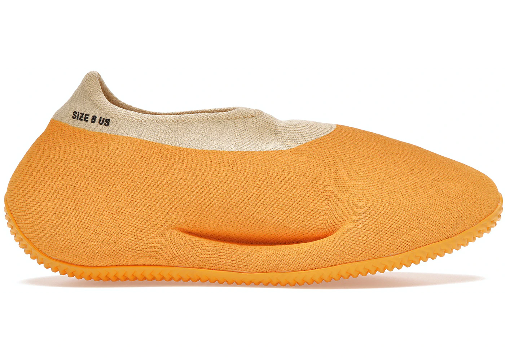
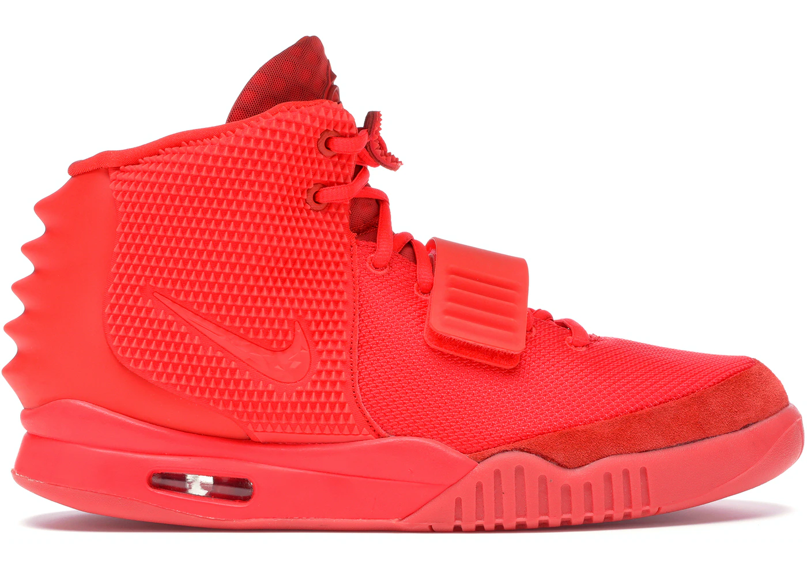
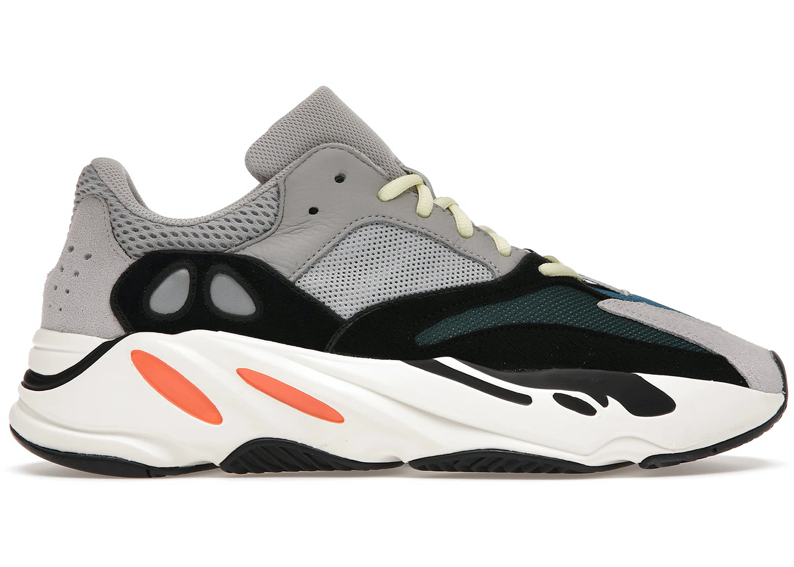
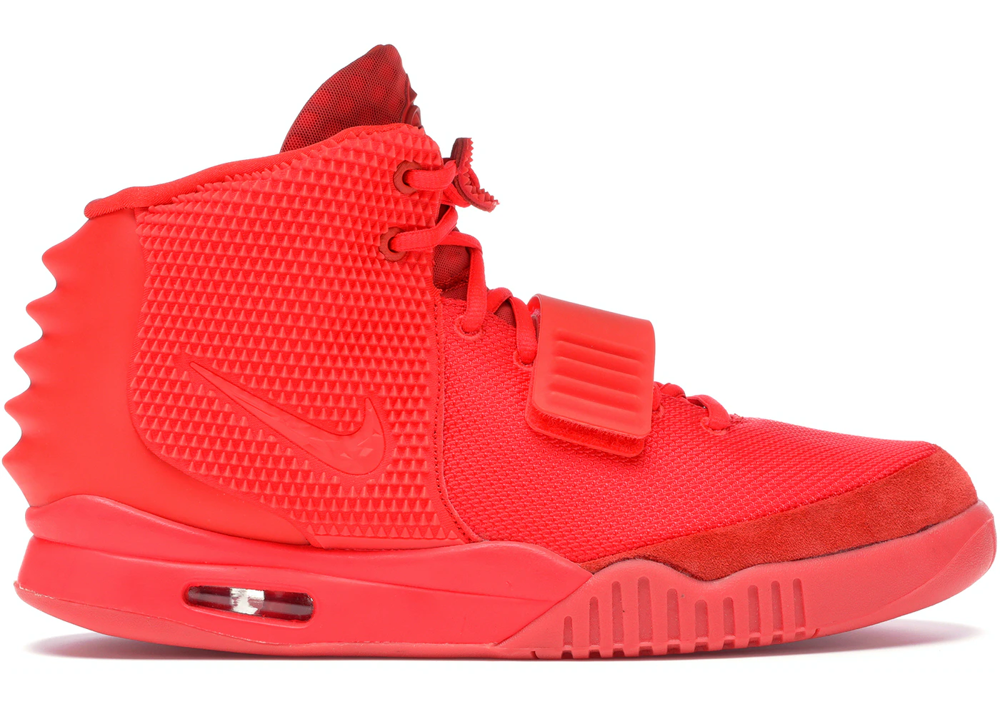
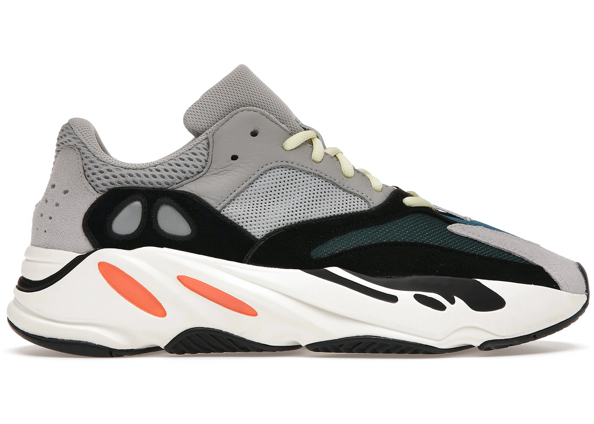

One of Kanye's defining moments in his career was his decision to design shoes. When a sneaker would drop, they would be sold out in seconds. This proved that Kanye can make any product sell. There were polarizing opinions on some of his sneaker designs but as the years went on, these designs became well loved in the sneaker community. This page will look through the many design silhouettes under the Yeezy line.
 


